14070532_Front
319.956 × 5.000 mm · 0 pads
Pad IDs: None
Stock shaft side elevation; length remains untrimmed. No electrical terminal.
17 footprints · 16 manufacturer DXFs · 62 wiring targets. Each preview is scaled independently. Click an image for the full native SVG. See dimension audit and assembly-fit notes.
319.956 × 5.000 mm · 0 pads
Pad IDs: None
Stock shaft side elevation; length remains untrimmed. No electrical terminal.
88.445 × 70.957 mm · 0 pads
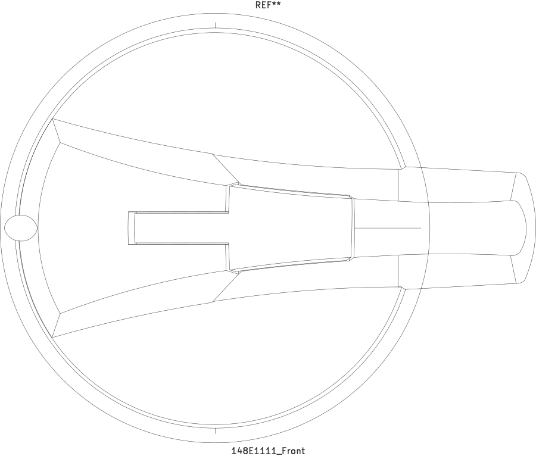
Pad IDs: None
Operating face. Outline includes a small protrusion outside the 88 mm dimension. No distortion to force the envelope to 88 mm. Rotation center is not the footprint origin.
78.808 × 142.730 mm · 6 pads
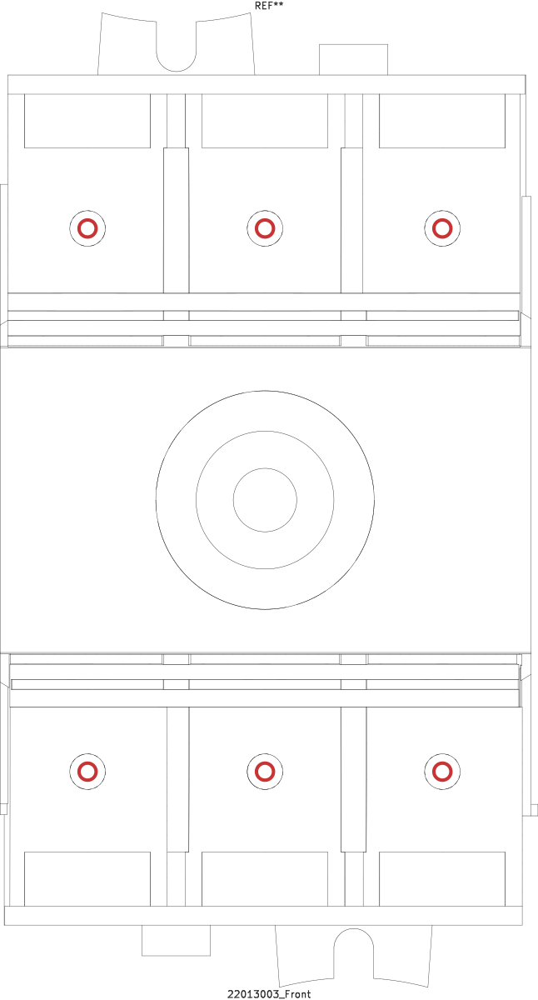
Pad IDs: 1, 3, 5, 2, 4, 6
Bare screw-facing projection from manufacturer STEP; the DXF front view obscures the face with a handle. 78 mm is body width, not the complete 78.808 mm clip envelope. Bare height 142.730 mm is CAD-derived; 189 mm applies to the cover pair. Use the STEP mounting-hole center span of 131.3 mm for this layout. The published drawing gives 131.4 mm and the DXF dimension endpoints give 131.351 mm; those values remain recorded as source evidence.
78.000 × 188.976 mm · 0 pads
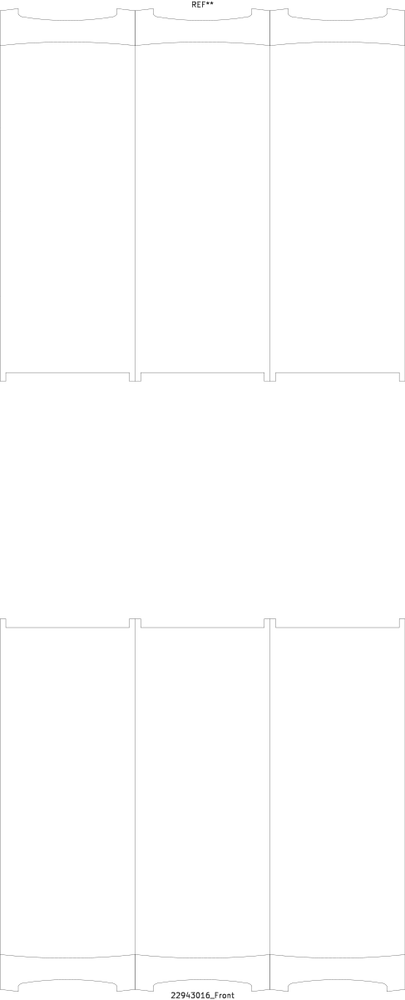
Pad IDs: None
Both terminal covers shown at manufacturer installed spacing. Empty center remains empty. Overlay registration to the disconnect requires assembly alignment; each footprint is independently centered.
21.182 × 99.092 mm · 0 pads
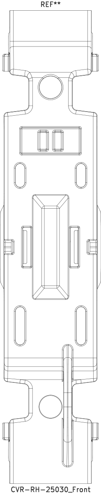
Pad IDs: None
Single-pole cover rotated to align with fuse-holder orientation; one footprint is one cover.
35.400 × 105.000 mm · 4 pads
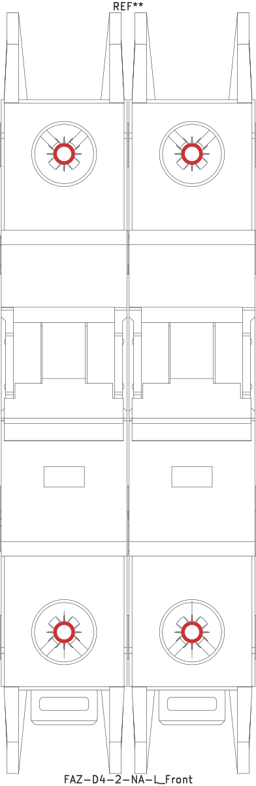
Pad IDs: 1, 2, 3, 4
Screw-facing elevation; four terminals, two poles.
17.903 × 106.792 mm · 10 pads
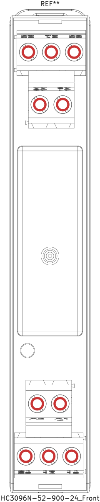
Pad IDs: 13, 14, 23, A1+, A2, 41, 42, 24, 31, 32
Terminal numbering uses the 2NO/2NC variant in the manufacturer datasheet. Screw centers fitted to supplier spline geometry; small real top/bottom offsets retained. Envelope 106.792 mm includes detail beyond the height dimension endpoints.
45.000 × 75.500 mm · 14 pads
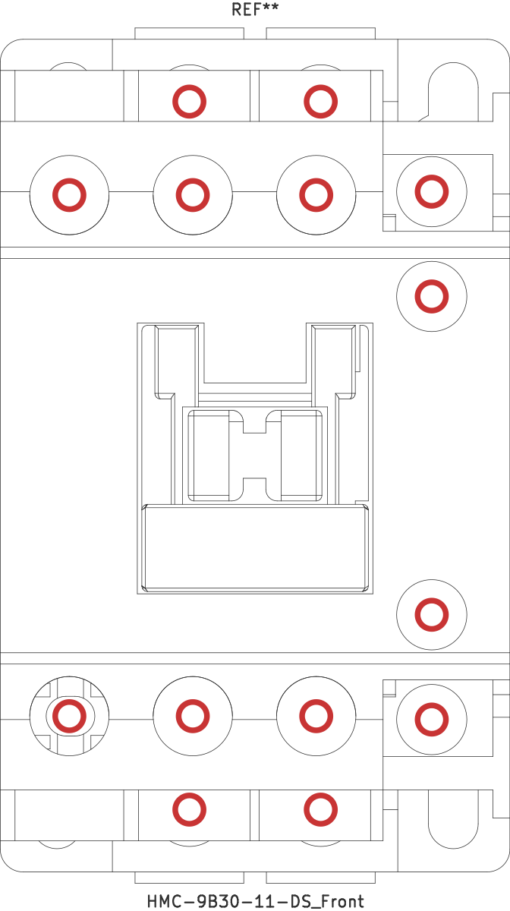
Pad IDs: 1, 3, 5, 2, 4, 6, 43, 31, 32, 44, A1.TOP, A2.TOP, A1.BOT, A2.BOT
All 14 terminals retained, including four separate coil-access screws. Built-in auxiliary terminals are 43/44 NO and 31/32 NC. Pole pitch 10.9 mm in supplied model; overload mating needs assembly verification.
25.000 × 48.000 mm · 4 pads
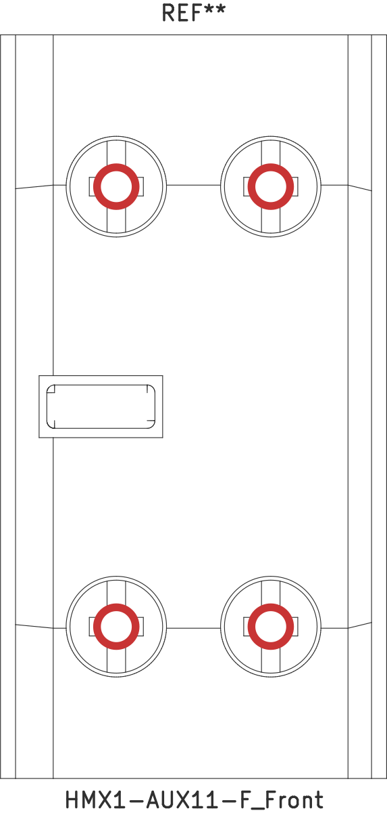
Pad IDs: 51, 63, 52, 64
Manufacturer STEP supplies the screw-facing view absent from DXF. Actual product photograph identifies left NC 51/52 and right NO 63/64. No matching Controls symbol currently exists; these are manufacturer terminal IDs.
90.700 × 26.500 mm · 0 pads
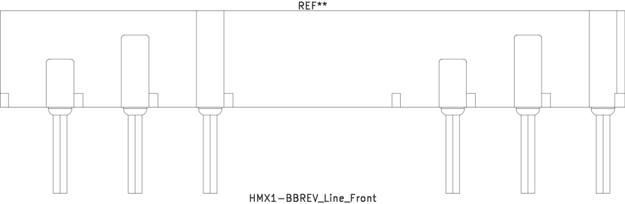
Pad IDs: None
Kit split into line and load pieces. Graphics-only accessory: connections occur at mating contactor terminals, not independent wire terminals. Load-piece height 19.5 mm is CAD-derived.
90.700 × 19.500 mm · 0 pads
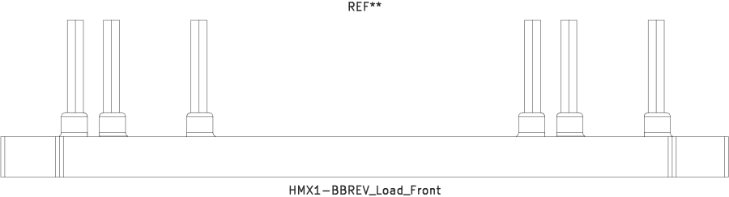
Pad IDs: None
Kit split into line and load pieces. Graphics-only accessory: connections occur at mating contactor terminals, not independent wire terminals. Load-piece height 19.5 mm is CAD-derived.
21.200 × 83.000 mm · 4 pads
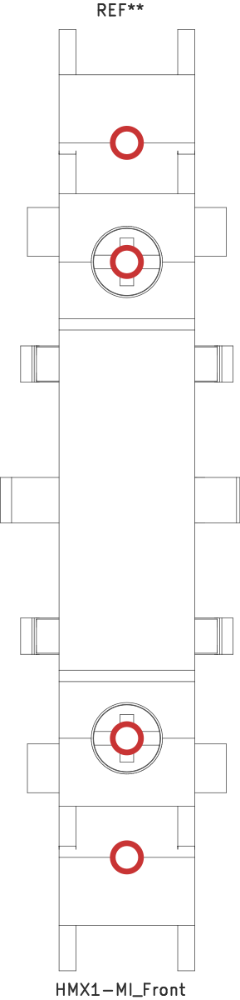
Pad IDs: 111, 121, 112, 122
Screw-facing manufacturer STEP projection, not the large flat side in DXF. Four screws at different depths project separately; no fan-out required. Terminal order top to bottom: 111,121,112,122. Outer two screws are hidden by nearer model geometry in the true front projection; their wiring pads retain the measured screw centers and depths.
37.400 × 39.473 mm · 2 pads
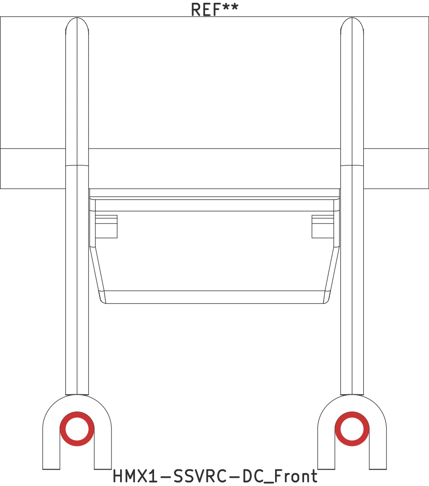
Pad IDs: 1, 2
Terminal-facing view includes the supplier lead shape. The two flexible factory lead wires terminate in forks and connect across the contactor coil terminals; the body clips into the contactor mounting space. These are supplied suppressor leads, separate from the HMX1-BBREV reversing busbars. Their 24 mm CAD spacing is a depicted wire position, not a fixed mating pitch. Final installed wire routing can vary. Numbers 1/2 match the catalog symbol, not polarity.
45.000 × 74.550 mm · 10 pads
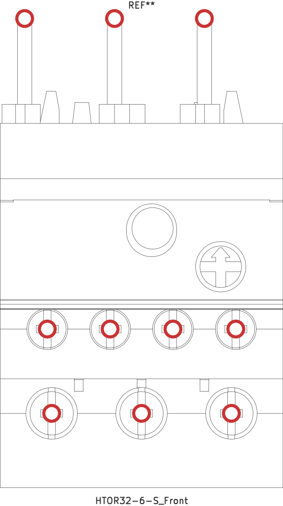
Pad IDs: IN1, IN2, IN3, 2, 4, 6, 95, 96, 97, 98
Front includes three input blades and seven screw terminals. The overload mounts below the contactor, directly into its three load terminals (2/T1, 4/T2, 6/T3). Input pad centers are at the blade tips. Supplier CAD input pitch is 14.3 mm, whereas HMC-9B30-11-DS has 10.9 mm pole pitch; the manufacturer lists compatibility, but the exact installed blade arrangement is not represented by these separate models. No scaling or bending was invented.
51.125 × 5.000 mm · 0 pads
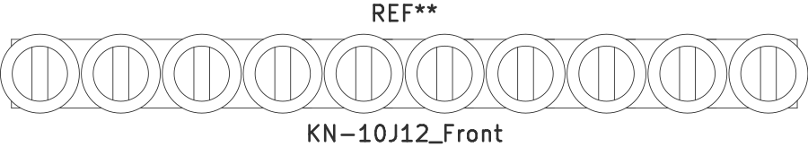
Pad IDs: None
Screw-facing jumper. 4.4 mm drawing dimension describes the bar; head envelope is 5 mm. Graphics-only accessory, without independent wire terminals.
5.000 × 44.200 mm · 2 pads
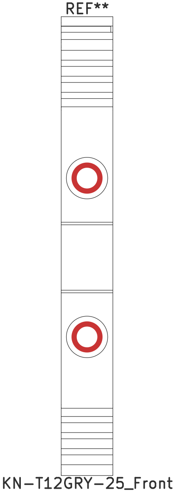
Pad IDs: 1, 2
Rotated into installed vertical terminal orientation on a horizontal DIN rail. Two actual wire terminals; jumper is separate.
74.491 × 80.400 mm · 6 pads
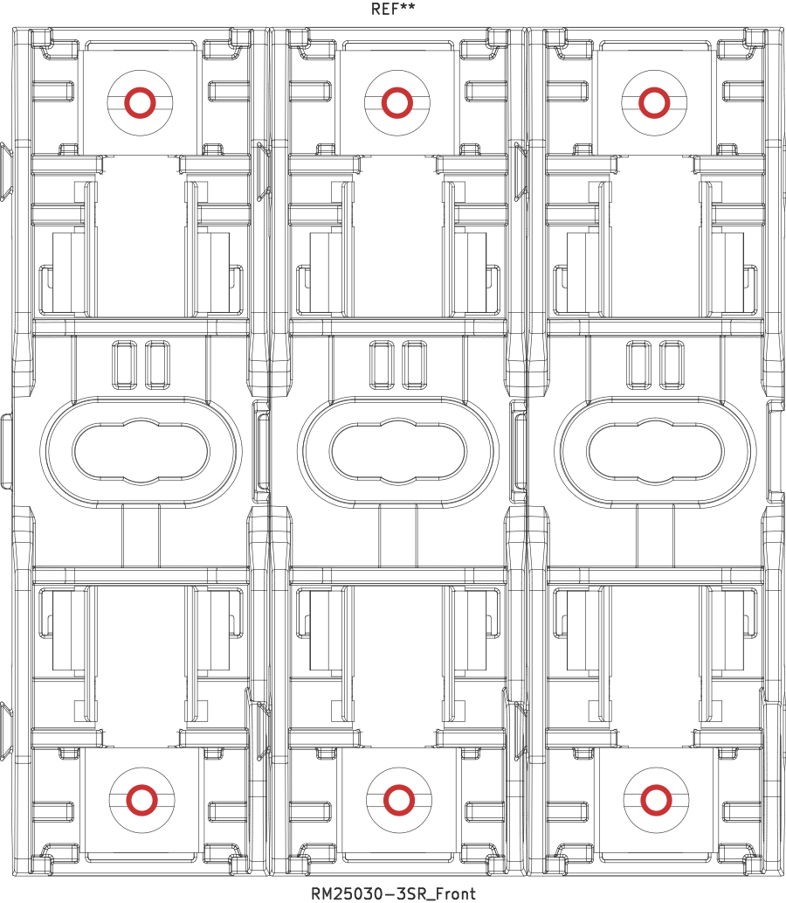
Pad IDs: P1.A, P2.A, P3.A, P1.B, P2.B, P3.B
Approved uncovered sample preserved byte-for-byte. 80.400 mm uncovered height is from CAD; published 99.1 mm is the covered height. Six approved 14 AWG review pads retained.